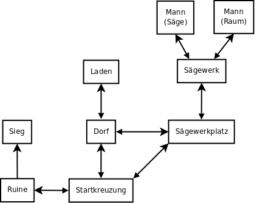

Tutorial "Text-Browsergames mit PHP" (C) 2012 Stephan Kreutzer Tutorial "Text-Browsergames mit PHP" is free software: you can redistribute it and/or modify it under the terms of the GNU Affero General Public License version 3 only, as published by the Free Software Foundation. Tutorial "Text-Browsergames mit PHP" is distributed in the hope that it will be useful, but WITHOUT ANY WARRANTY; without even the implied warranty of MERCHANTABILITY or FITNESS FOR A PARTICULAR PURPOSE. See the GNU Affero General Public License 3 for more details. You should have received a copy of the GNU Affero General Public License 3 along with Tutorial "Text-Browsergames mit PHP". If not, see <http://www.gnu.org/licenses/>. The complete source code is available at <http://www.skreutzer.de/browsergames/technologien/text_browsergames_mit_php.html>.
Download des vollständigen Quellcodes (Version 20120903T0747). Kurzes Beschreibungsvideo auf youtube.com. Ausführlicheres Code Review zum Tutorial-Beispielcode auf youtube.com.
Bei Text-Browsergames liegt im Gegensatz zu Tabellen-Browsergames der Schwerpunkt nicht so sehr auf Werte-Listen und deren Manipulation, sondern es ist eher eine „flachere“ Darstellung mittels Textelementen, Links und Formularen vorgesehen. Folglich bietet sich diese Technologie für Spiele an, die Entscheidungs-Abfolgen als zentrales Spielelement einsetzen.
Ein besonderes Merkmal der Technik ist die individuelle Programmierung zahlreicher einzelner Seiten, welche jeweils eine Spielsituation samt den verfügbaren Optionen generieren. Eine Seite an sich weist einen vergleichsweise geringen Komplexitätsgrad auf, da sowohl für die Werte-Manipulation in der MySQL-Datenbank als auch für die Generierung von HTML-Formularen eine eigene PHP-Bibliothek implementiert wird, obwohl in Sonderfällen stets auch separate HTML-Ausgaben erzeugt werden. Bereichert wird das Spiel durch globale Menüs und Übersichten, die von überall aus aufgerufen werden können und entweder rein informativen Charakter haben oder alternativ Einfluss auf das Spielgeschehen nehmen.
Die Konzeptionsphase bei Spielen dieser Art konzentriert sich in erster Linie auf die Planung der Seiten und deren Beziehungen untereinander. Aufgrund der technologischen Eigenheiten soll ein einfaches Adventure-Spiel realisiert werden. Hierfür muss zunächst ein schlüssiges Umfeld definiert werden, sprich: der Rahmen, in welchen sich die einzelnen Spiel-Szenen konsistent integrieren lassen, sowie der allgemeine Story-Verlauf. Sodann müssen die Szenen entworfen werden und die Interaktion auf und zwischen denselben. Es müssen auch Einflüsse durch globale Ansichten einbezogen werden; in diesem Fall wird ein Inventar angeboten werden, dessen Einträge je nach Szenen-Kontext benutzt werden können, um im Spiel voranzukommen, die aber bei anderen Szenen keinen Effekt haben sollen. Wenn diese Vorarbeit geleistet ist, empfiehlt es sich, die verschiedenen Entscheidungsvarianten nochmals durchzugehen und unvorhergesehene Kombinationen ausfindig zu machen. Die Spielwelt ist schnell umrissen:
Die freie Bewegung zwischen den Szenen ist jederzeit ohne Einschränkungen gegeben, mit Ausnahme der Szene „Sieg“, die nur via Interaktion mit der Szene „Ruine“ erreicht werden kann, wohin es auch nur eine Lösungsmöglichkeit gibt. „Startkreuzung“ bildet den Einprungspunkt beim erstmaligen Betreten der Welt, zu jedem späteren Zeitpunkt wird die zuletzt besuchte Szene geladen. Auf diese Weise ist „Sieg“ automatisch die Endstation, da kein Weg zurück führt. Der „Laden“ ist die Anlaufstelle, um Gegenstände in das Inventar aufzunehmen (einzukaufen). Bei den angebotenen belegten Brötchen teilen sich alle Spieler die (noch) verfügbare Menge für diesen Tag. Jeder Spieler kann alle 3 Brötchen an einem Tag kaufen, und andere Spieler haben dann keine Möglichkeit mehr, ein weiteres Brötchen an diesem Tag zu erwerben. Die jeweils übrig bleibenden Brötchen stehen aber natürlich weiterhin zum Verkauf. Mit dem nächsten Tag wird die Maximalanzahl von 3 Brötchen wieder aufgefüllt. Zwischen den Szenen „Sägewerk“, „Mann (Säge)“ und „Mann (Raum)“ ist ein komplexeres Zusammenspiel geplant:
Der Schlüssel aus dem Inventar kann auf der Szene „Ruine“ benutzt werden, was eine Option freischaltet, um die weitere Szene „Sieg“ zugänglich zu machen.
Der Quelltext wird in drei Bereiche eingeteilt: funktionale/globale Seiten, Bibliotheken und Szenen. Das GUI besteht einerseits aus $/ftp/game.php, wo entsprechend des aktuellen Standorts des Spielers laut Datenbank die passende Szene geladen werden soll, und andererseits aus einer Inventarseite $/ftp/inventory.php. $/ftp/index.php und $/ftp/logout.php sollen die Anmeldung bzw. Abmeldung übernehmen. Unterstützend kommt $/ftp/database.inc.php hinzu, was beim Einbinden die Verbindung zur Datenbank herstellt. In $/ftp/gamelib.inc.php werden sowohl Funktionen zur Manipulation der Datenbank als auch zur Erzeugung von HTML-Bestandteilen zusammengefasst, während in $/ftp/inventorylib.inc.php Hilfsmittel zur Verwaltung des Inventars bereitgestellt werden. Die Datenbank-Tabellen sind ähnlich zweigeteilt – indem die Tabelle user die Benutzerdaten aufnimmt, die Tabellen variables_global, variables_user und inventory jedoch ein generisches Konzept verfolgen. Einträge in variables_global gelten für die Spielwelt insgesamt, variables_user ist spezifisch für einen Benutzer und inventory enthält ebenso pro Benutzer die dazugehörigen Inventar-Einträge.
Bei der Eingabe des Benutzernamens wird dieser neu angelegt, sofern noch nicht vorhanden. Wenn der Benutzername schon einmal zuvor verwendet wurde, soll zusätzlich das hinterlegte Passwort überprüft werden. Automatisch soll der Spieler an der zuletzt in die Datenbank geschriebene Szene fortsetzen, bei der erstmaligen Anmeldung ist dies per Vorgabe die „Startkreuzung“.
Die Beteiligung von PHP und einer Datenbank bringt es mit sich, dass das Browsergame auf einem Server betrieben werden muss. Weil u.a. Klassen eingesetzt werden, muss der Server mindestens PHP5 aufweisen. Die Programmierung und Entwicklung sollte dabei immer auf einer lokal installierten Server-Software auf dem eigenen Rechner durchgeführt werden. Ein fertiges, getestetes Ergebnis wird dann später auf einen Webserver hochgeladen, um über das Internet potentiellen Spielern zugänglich gemacht zu werden. Kenntnisse hinsichtlich Installation und Betrieb von Server-Software lokal und online sind nicht Gegenstand dieses Tutorials und werden vorausgesetzt. Es sollte berücksichtigt werden, dass zwar das lokale Experimentieren mit Browsergame-Code für jedermann vergleichsweise gefahrlos möglich ist, gleichzeitig aber im Web-Umfeld durch fehlerhaften Code oder falsche Konfiguration erhebliche Sicherheitslücken entstehen können, die im schlimmsten Fall sogar den gesamten Server lahm legen oder etwa zu strafrechtlichen Konsequenzen führen könnten. Deshalb besteht eine weitere wichtige Voraussetzung darin, sämtliche Versuche zu unterlassen, bei welchen man nicht genau weiß, was man eigentlich tut – entsprechendes Wissen ist vorher anzueignen, bevor dieses Tutorial Anwendung finden kann. Darüber hinaus ist der Code des Tutorials keineswegs vor Sicherheitslücken gefeit, sodass er vor dem Einsatz in einer Produktiv-Umgebung überprüft werden muss. Festgestellte Fehler sollen bitte gemeldet werden.
Der Tutorial-Code geht davon aus, dass der Inhalt der Datei $/src/database.sql (oder ein Äquivalent) auf dem Datenbank-System des Servers ausgeführt worden ist. Datenbank-Name, Datenbank-Benutzer, Host und Passwort müssen dabei angepasst und in $/ftp/database.inc.php vermerkt werden.
In $/ftp/index.php wird zunächst geprüft, ob ein Benutzer mit dem eingegebenen Namen bereis existiert. Wenn dies nicht der Fall ist, wird er mit insertNewUser() aus der $/ftp/gamelib.inc.php neu angelegt. Dort wird u.a. das Attribut user.scene mit der Szene "start" vorbelegt. Ferner wird die Tabelle variables_user mit allen Einträgen und allen Startwerten für diesen neu angelegten Benutzer initialisiert. Die eindeutige Identifikation eines zutreffenden Datensatzes geschieht mittels der Kombination aus variables_user.user_id und variables_user.variable, letzteres ist ein String-Name zur besseren Leserlichkeit, sollte aber aus Performance-Gründen üblicherweise eher mit IDs gelöst sein. Bei der Initialisierung von inventory finden ebensolche IDs Anwendung, wozu $/ftp/inventorylib.inc.php leserliche Konstantennamen für deren numerischen Wert bereitstellt. Für den Fall, dass zu einem späteren Zeitpunkt die Spieler-Stati oder die Gegenstände im Inventar erweitert werden sollen, muss der Initialisierungs-Code der insertNewUser() ebenfalls angepasst werden. Dieser Umstand könnte in der Dokumentation festgehalten oder per Kommentar über der Konstanten-Liste (zu finden am Beginn der $/ftp/inventorylib.inc.php) vermerkt werden. Eine andere Möglichkeit bestünde darin, die Inventar-Initialisierung als Funktion nach $/ftp/inventorylib.inc.php auszulagern. Solche Entscheidungen hängen maßgeblich davon ab, welchen Komplexitätsgrad das Spiel erreichen wird und ob derartige Design-Optimierungen erforderlich werden. Wenn es den Benutzer schon gibt, findet eine Passwort-Überprüfung statt. Nach Neuanlage des Benutzers oder erfolgreicher Passwort-Überprüfung wird dann nur noch die Session gestartet, was von nun an den Zugang zu $/ftp/game.php gewährt.
$/ftp/game.php ist die Hauptseite des Spiels mit der einzigen Aufgabe, die Szenen zu laden. Die Information, welche Szene momentan anzuwenden ist, kommt in aller Regel aus $_SESSION['scene']. Bei jedem Szenenwechsel wird $_SESSION['scene'] neu gesetzt und der Szenen-Name gleichzeitig in die Datenbank gespeichert (Feld user.scene). Wenn nach der (erstmaligen oder wiederholten) Anmeldung $_SESSION['scene'] noch nicht gesetzt ist, wird in der Datenbank nachgeschaut. Im Notfall wird die Szene auf "start" gesetzt, wenn der Szenen-Name weder aus $_SESSION noch aus der Datenbank ermittelt werden konnte. Der Szenen-Mechanismus funktioniert dann – sobald der Szenen-Name bekannt ist – so, dass zunächst geprüft wird, ob im Ordner $/ftp/szenen eine *.inc.php-Datei mit dem Szenen-Namen vorhanden ist. Wenn ja, wird diese direkt mit require_once() eingebunden und gelangt dadurch zur Ausführung. Im einfachsten Fall wird in der geladenen Szene ein Formular ausgegeben, danach passiert in $/ftp/game.php nichts weiter. Weil allerdings die Formulare der Szenen einen Szenenwechsel via HTTP-POST wiederum an $/ftp/game.php schicken, wird $/ftp/game.php erneut mit der noch unveränderten Szenen-Information geladen und dort dann $_POST ausgewertet. Wenn infolge der Werte in $_POST ein Szenenwechsel durchgeführt wurde (im Sinne der Datenbank und des neuen Wertes in $_SESSION['scene']), stimmt die ursprüngliche Szene in $szene natürlich nicht mehr mit der neuen $_SESSION['scene'] überein, was zum Laden der neuen Szene, ebenfalls mittels require_once(), führt.
Damit dieses Verfahren reibungslos funktioniert, gibt es bestimmte Regeln, welche Aktionen in welchem Teil der Szenen-Dateien gestattet sind und welche zu Problemen führen würden. Ein einfaches Beispiel ist die Szene "start", die in der Datei $/ftp/szenen/start.inc.php zu finden ist. Hier werden lediglich drei Szenenwechsel-Möglichkeiten angeboten, die beim ersten Aufruf unter Zuhilfenahme der generateHTMLChooseForm()-Funktion der $/ftp/gamelib.inc.php als HTML-Formular angeboten werden. generateHTMLChooseForm() erwartet einen Parameter $name, welcher als Array-Index im $_POST verwendet wird. Der zweite Parameter $options erwartet ein assoziatives Array, dessen Keys die Werte für das $_POST-Array repräsentieren. Die Array-Elemente von $options stellen die Beschriftung für das Formular-Element dar. Wurde das Formular an $/ftp/game.php abgeschickt, wird dieselbe Szene nochmals geladen, jetzt aber findet die Auswertung von $_POST statt. Alle drei Möglichkeiten führen durch den Aufruf von setScene() der $/ftp/gamelib.inc.php zu einem Szenenwechsel, was $/ftp/game.php nach Beendigung von $/ftp/szenen/start.inc.php feststellen wird. Der Fall case "rechts" gibt zusätzlich eine Wechsel-Nachricht aus, die überhalb der Szenenbeschreibung der Zielszene zu lesen sein wird. Diese Nachrichten sind nur einmalig sichtbar, denn wenn bei Abmeldung und Anmeldung dieselbe, neue Szene betreten wird, wird der Wechselcode nicht noch einmal ausgeführt und die Meldung unterbleibt. Ganz wichtig ist das
unset($_POST['richtung']);
damit die alten Formular-Daten nicht auch noch für die neue Szene bestehen bleiben. Ungünstigerweise könnte dort $_POST['richtung'] ebenfalls für das eigene Formular ausgewertet werden, ein derartiger Effekt ist also nicht erwünscht.
Über diese einfache Variante hinaus sind freilich auch komplexere Interaktionen wie z.B. in $/ftp/szenen/dorf_laden.inc.php interessant. Dort wird zu Beginn für jeden Script-Durchlauf eine Variable $broetchen['dorf_laden_broetchen_anzahl'] bereitgestellt, die sich aus dem Aufruf von getGlobalVariables() der $/ftp/gamelib.inc.php speist. Besagte Funktion (und analog dazu getUserVariables() mit dem Unterschied des $userID-Parameters) holt alle Werte aus variables_global.value laut der im $names-Parameter spezifizierten Namen für variables_global.variable. Zu diesem Zweck setzt getGlobalVariables() einen SQL-Query-String dynamisch zusammen und führt etliche Prüfungen durch, ob das Ergebnis vollständig ist. Da diese Funktion nur durch den Programmierer explizit aufgerufen wird, muss dieser Sorge dafür tragen, dass alle Variablen in der Tabelle auch tatsächlich vorhanden sind. Sollte diese Anforderung einmal nicht erfüllt sein, gibt die Funktion Fehlermeldungen aus, die direkt im HTML-Code landen. Sobald alle Aufrufe getestet wurden, können die Prüfungen aus Performance-Gründen bei Bedarf ausgebaut werden. Zurück in $/ftp/szenen/dorf_laden.inc.php wird die „globale Variable“ "dorf_laden_broetchen_anzahl" mithilfe von setGlobalVariables() auf 3 gesetzt, wenn der abgefragte Timer "dorf_laden_broetchen_timer" auf einem vergangenen Tag steht. Folglich wird "dorf_laden_broetchen_anzahl" jeden Tag erneuert. setGlobalVariables() (und analog dazu setUserVariables() mit dem Unterschied des $userID-Parameters) führt für jedes Element des $variables-Parameters (ein assoziatives Array mit Variablen-Name für variables_global.variable als Key samt Wert) einen SQL-UPDATE-Befehl in einer SQL-Transaktion durch. Abhängig von der nun in $broetchen['dorf_laden_broetchen_anzahl'] angegebenen Anzahl wird entweder durch generateHTMLLadenForm() (eine lokale Funktion, die in $/ftp/szenen/dorf_laden.inc.php definiert ist) oder durch generateHTMLChooseForm() ein abweichendes Interaktions-Formular bereitgestellt. Beim Absenden des Formulars wird auf beide Formular-Möglichkeiten im
switch($_POST['wahl'])
{
case "broetchen":
// Nur möglich mit generateHTMLLadenForm()-Formular.
break;
case "verlassen":
// Nur möglich mit generateHTMLChoose()-Formular.
break;
default:
break;
}
unterschiedlich reagiert. Ein Trick ist hierbei, in beiden Formularen als Formularfeld-Name "wahl" einzusetzen, man könnte aber genauso mit if...else if zwei Eingabefeld-Alternativen voneinander unterscheiden. Der Fall case "broetchen" verdient eine genauere Betrachtung, denn in diesem Ablauf-Zweig nimmt die Szene weitreichenden Einfluss auf das Spielsystem. Namentlich wird $/ftp/inventorylib.inc.php eingebunden und die darin enthaltene Klasse Inventory eingesetzt. Ein Objekt der Klasse repräsentiert das komplette Inventar eines Benutzers, welches im Konstruktor (Inventory::__construct()) in den Member $this->inventory via Datenbank-Abfrage eingelesen wird. Die Tabelle inventory sollte also während der gesamten Lebenszeit des Inventory-Objekts nicht verändert werden, da das Objekt nicht aktualisiert wird. In der Regel sollte dies aber kein Problem darstellen, da eine Szene ohnehin exklusiven Zugang zum aktuellen Benutzer hat und keine anderweitigen Datenbank-Manipulationen vorgesehen werden sollten. Mit der Methode Inventory::GetItem() kann die Anzahl eines Gegenstandes abgefragt werden, Inventory::SetItem() manipuliert selbige. Inventory::GetItem() liefert immer den aktuellen Stand der Anzahl inklusive aller vorangegangener Inventory::SetItem()-Aufrufe, aber womöglich abweichend zum derzeitigen Stand der Datenbank. Wenn das Objekt zerstört wird, schreibt der Destruktor (Inventory::__destruct()) die neuen Gegenstands-Mengen in die Datenbank, aber aus Optimierungs-Gründen nur jene, die durch Inventory::SetItem() verändert wurden. Mit der Methode Inventory::DiscardModifications() kann verhindert werden, dass der Destruktor die vorangegangenen Inventory::SetItem()-Modifikationen in die Datenbank schreibt. Aus diesen Eigenheiten ergibt sich die Art und Weise der Verwendung der Inventory-Objekte, nämlich eine lokal eingeschränkte, exklusive Nutzung – die absolut ausreicht, um für die Szenen eine angenehme Schnittstelle zur Inventarverwaltung anzubieten. Zu beachten ist dabei lediglich, dass sämtliche Logik-Prüfungen vom aufrufenden Code durchgeführt werden müssen, denn die Inventory-Klasse lässt ohne weiteres negative Werte zu und führt auch keine Berechnungen aus. $/ftp/szenen/dorf_laden.inc.php macht von der Inventar-Verwaltung Gebrauch, indem von der „globalen Variable“ "dorf_laden_broetchen_anzahl" (Anzahl der im Laden angebotenen Brötchen) die ausgewählte Anzahl abgezogen und ins Inventar gutgeschrieben, gleichzeitig aber auch die Bezahlung in Form des Inventar-Postens INVENTORY_TALER abgezogen wird. In etwa läuft die Transaktion wie folgt ab:
Der übrige Code besteht darüber hinaus darin, dass informationelle Ausgaben und die Formulare zur weiteren Navigation erzeugt werden. Wenn alle Brötchen, die für diesen Tag zur Verfügung standen, verkauft worden sind, wird das Angebots-Formular weder für den aktuellen Spieler noch für andere Spieler angezeigt, wenn nach dem Kauf des Spielers aber weiterhin Brötchen übrig sind, kann er direkt im Anschluss erneut einkaufen.
Um die Benutzung des Inventars zu ermöglichen, ist in $/ftp/game.php zu jeder Spielansicht ein Link nach $/ftp/inventory.php angebracht. Wenn die Seite über das Formular oder über den „Verlassen“-Link nach $/ftp/game.php verlassen wird, enthält $_SESSION['scene'] weiterhin die momentan anzuzeigende Szene, sodass der Aufruf des Inventars keine Auswirkung auf die Position des Spielers hat. Die Oberfläche wird mithilfe der Inventory-Klasse aus rein informativen Einträgen und aus einem Formular aufgebaut. Letzteres dient der Benutzung einzelner Gegenstände auf der aktuellen Szene. Da über HTTP-POST die Auswahl an $/ftp/game.php unter dem Namen inventory_item geschickt wird, können Szenen-Seiten auf $_POST['inventory_item'] reagieren und entsprechende Aktionen auslösen. Die Szene "ruine" unter $/ftp/szenen/ruine.inc.php macht genau das. $_POST['inventory_item'] wird unabhängig von $_POST['wahl'] ausgewertet, dennoch hat die Inventar-Berücksichtigung Auswirkungen auf die spätere Szenengestaltung. Die „Benutzervariable“ "ruine_schloss_geoeffnet" dient dazu, den bisherigen Fortschritts-Status zu merken. Das Gitter kann nur dann geöffnet werden, wenn es noch verschlossen ist, was durch den Wert 0 für $statusSchloss signalisiert wird. Sofern bei verschlossenem Gitter der Schlüssel aus dem Inventar benutzt wird, prüft $/ftp/szenen/ruine.inc.php nochmal über das Inventar, ob der Spieler tatsächlich den Schlüssel hat oder ob es sich um einen Betrugsversuch handelt. Wenn nicht, wird der Status geändert zu 1 für „geöffnet“ mit darauffolgender Hinweismeldung. Der Wert 1 in $statusSchloss sorgt für einen neuen Auswahlpunkt im Formular, der vorher nicht zur Verfügung stand.
Das zweifellos komplexeste Zusammenspiel von Szenen findet zwischen "saegewerk_innen_mann_saege" ($/ftp/szenen/saegewerk_innen_mann_saege.inc.php) und "saegewerk_innen_mann_begutachter" ($/ftp/szenen/saegewerk_innen_mann_begutachter.inc.php) statt. Nicht nur, dass die Interaktion über Szenengrenzen hinweg stattfindet, sondern darüber hinaus ändern die Szenen auch noch ihre inhaltliche Bedeutung. Zur Veranschaulichung:
| Benutzervariable "saegewerk_innen_mann_saege_konversationsstatus" | Szene "saegewerk_innen_mann_begutachter" | Szene "saegewerk_innen_mann_saege" |
|---|---|---|
0 |
– | "saegewerk_innen_mann_saege_konversationsstatus" = 1 |
1 |
"saegewerk_innen_mann_saege_konversationsstatus" = 2 |
– |
2 |
INVENTORY_BROETCHEN - 1, "saegewerk_innen_mann_saege_konversationsstatus" = 3 |
– |
3 |
INVENTORY_SCHLUESSEL + 1, "saegewerk_innen_mann_saege_konversationsstatus" = 4 |
– |
4 |
– | – |
In $/ftp/szenen/saegewerk_innen_mann_saege.inc.php wird die „Benutzervariable“ "saegewerk_innen_mann_saege_konversationsstatus" (siehe Tabelle variables_user) abgefragt und in $statusAbloesung bereitgestellt. Bei nicht abgesendetem Formular ($_POST['wahl'] nicht gesetzt) bestimmt $statusAbloesung, welcher Szenentext ausgegeben werden muss. Es gilt zu bedenken, dass dieser Teil niemals einen Szenenwechsel veranlassen darf; ebenso ist der Zugriff auf das Inventar, das Lesen oder Schreiben von globalen oder benutzerspezifischen Variablen hier nicht (mehr) gestattet. Alle diese Operationen sollten möglichst vorher im Code darüber erledigt worden sein – er Block bei nicht gesetztem $_POST-Array dient nämlich allein der Generierung von Anzeige-Code, potentiell auf Basis von vorher ermittelten Werten. Bei abgesendetem Formular wird, wenn "saegewerk_innen_mann_saege_konversationsstatus" bisher 0 war, nach 1 versetzt, um dann auf der Szene "saegewerk_innen_mann_begutachter" weitere Berücksichtigung zu finden. $/ftp/szenen/saegewerk_innen_mann_begutachter.inc.php liest analog zunächst die „Benutzervariable“ "saegewerk_innen_mann_saege_konversationsstatus" aus. Darauf folgt die Behandlung von Inventar-Ereignissen, die nur beim Geben des Brötchens an den von der Säge abgelösten Mann (im Code der Wert 2 für "saegewerk_innen_mann_saege_konversationsstatus") zur Ausführung gelangen darf. Wenn mittels $_POST['inventory_idem'] vom Inventar signalisiert wird, dass das Brötchen benutzt werden soll, kann diese Information auch durch einen Betrugsversuch zustandekommen, weswegen nochmal zur Sicherheit das Inventar nach der Anzahl der verfügbaren Brötchen gefragt wird. Im Normalfall wird dann das Brötchen aus dem Inventar abgezogen, was eine direkte Veränderung von "saegewerk_innen_mann_saege_konversationsstatus" vor Abarbeitung der späteren Ausgabe-Anweisungen zur Folge hat. Nach Absendung des Formulars muss die Szene je nach $statusAbloesung unterschiedliche Operationen ausführen: der case "1" schaltet gerade mal "saegewerk_innen_mann_saege_konversationsstatus" um, der scheinbar fehlende case "2" wurde ganz oben in Kombination mit dem Inventar abgehandelt und bei case "3" beschränkt sich der Code auf einen einfachen Inventar-Transfer samt dem Vermerk des letzten Status für "saegewerk_innen_mann_saege_konversationsstatus".
Schnell wird deutlich, dass die Hauptlast bei dieser Technologie auf dem Design des Textes und der Interaktionen liegt, namentlich im Entwurf der Szenen. Obwohl weitere globale Elemente um den großen Stapel an Szenen-Scripts herum angeordnet werden könnten, so ist doch deren Einfluss allein schon von der Code-Architektur her eingeschränkt. Eine Aufweichung des Szenen-Konzepts würde beispielsweise recht schnell zur Technologie der Tabellen-Browsergames führen; die reinen Text-Browsergames wählen diesen Weg bewusst nicht und legen den Schwerpunkt mehr auf die Story. Ungewöhnlicherweise werden dennoch HTML-Formulare eingesetzt, jedoch können zumindest manche Teile der Oberfläche auch mittels Textlinks realisiert werden, um keinen „Bruch im Medium“ hervorzurufen. Die Szenen selbst sind nicht generisch, was einen höheren Aufwand als bei einer datengesteuerten Textspiel-Engine bedeutet, was aber auch einen höheren Grad der Flexibilität und eine geringere Lernkurve zur Folge hat.
Zugegeben: Augenscheinlich handelt es sich um eine primitive Technologie, die sich nur wenig überhalb von schlichtem HTML bewegt. Dennoch bieten Text-Browsergames mit PHP eine Chance für Projekte, die eine weitläufige und abwechslungsreiche Geschichte zu erzählen haben. Ein weiterer Vorteil liegt darin begründet, dass keine andere klassische Disziplin benötigt wird als nur die des Programmierers, optional mögen Story-Designer hinzukommen. Wenngleich der Code auch ob seiner gegenseitigen Abhängigkeiten nicht gerade eine leichte Wartbarkeit aufweisen dürfte, sind Ergebnisse schnell möglich und können auch laufend erweitert und verändert werden, da die grundlegende Spielmechanik nicht in einem großen Kern besteht, sondern aus vielen separaten Szenen. Insgesamt fehlt es also nicht an technischem Können, sondern vielmehr an einer zündenden Idee, um Interessierte auf diese recht ungewohnte Art zu spielen aufmerksam zu machen.